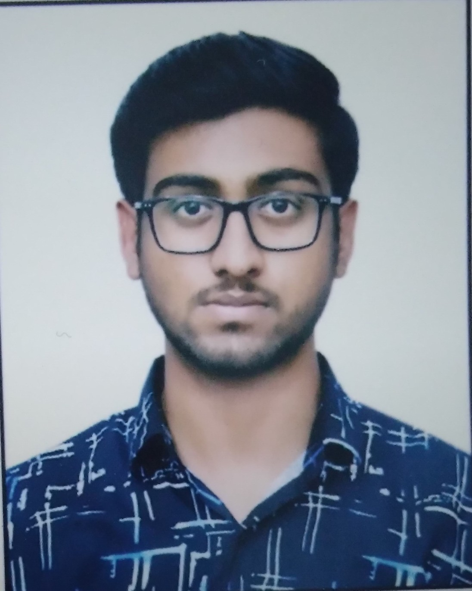
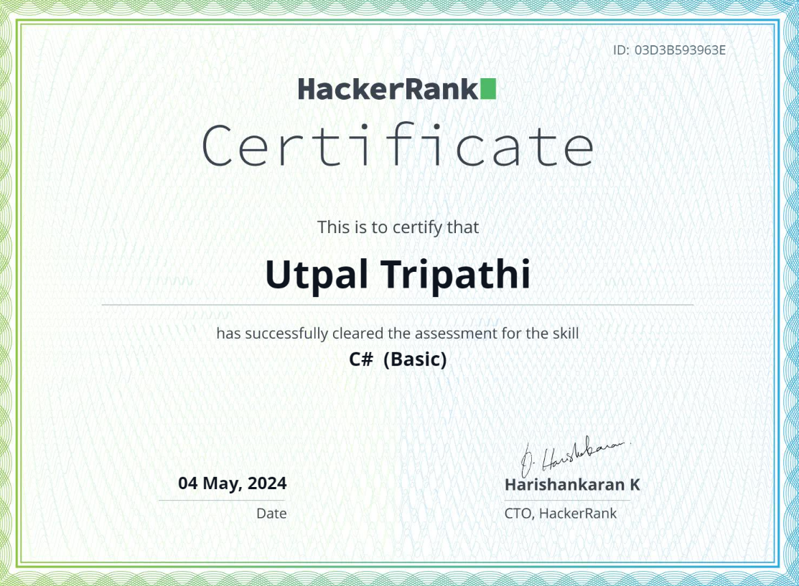
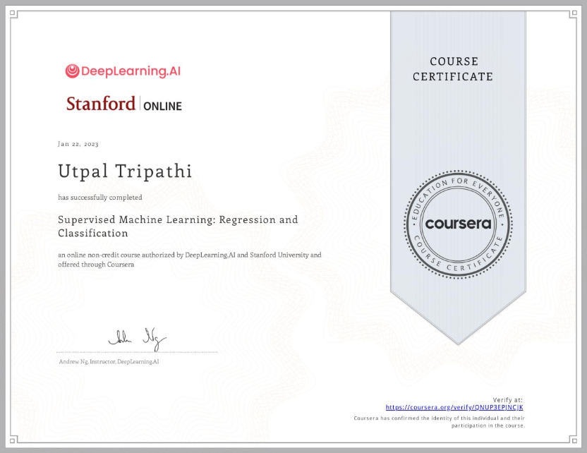
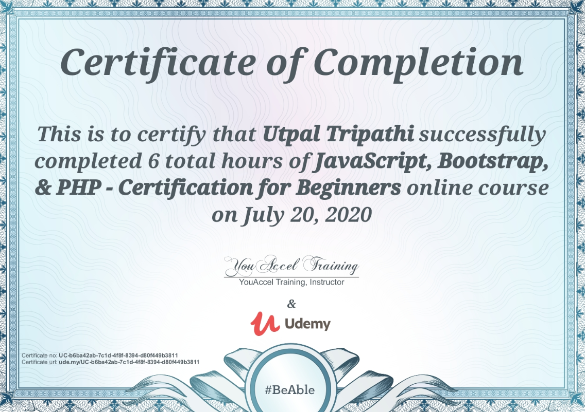
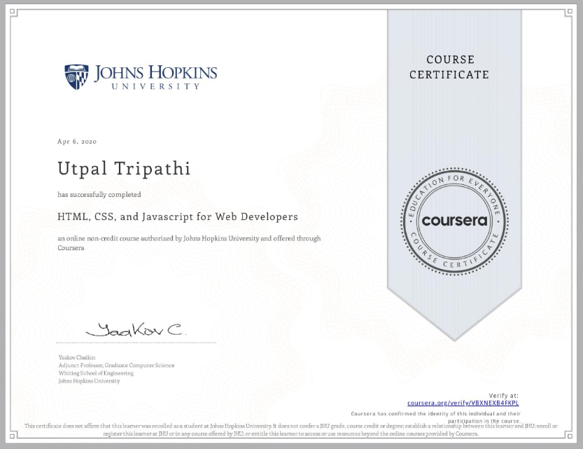
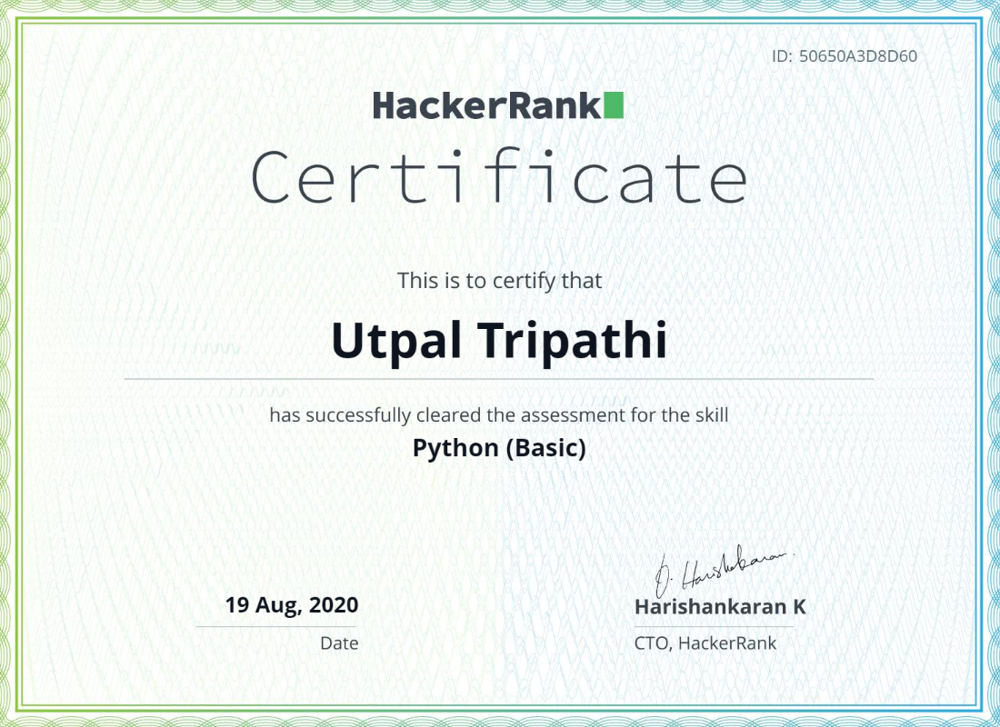
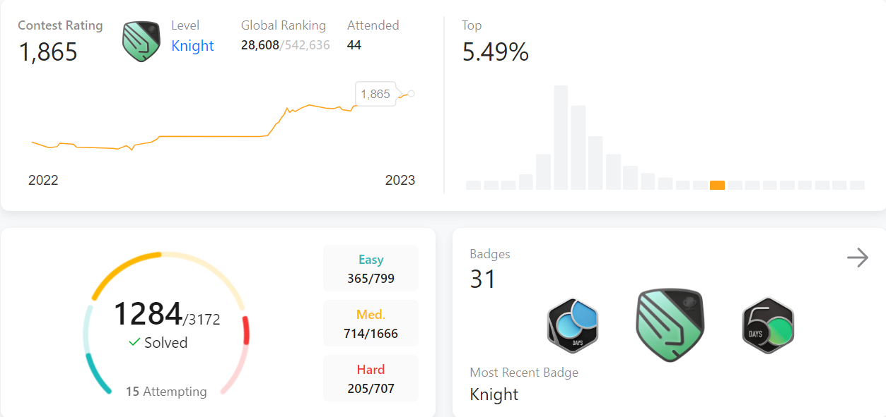

Gender: Male
Date of Birth: 05/01/2001
E-mail: utpaltripathi14@gmail.com
Contact: +91-7311124372

Educational Qualification
| Year | Degree/Examination | Institution/Board | CGPA/Percentage |
|---|---|---|---|
| 2024 | MCA | NIT, Trichy | 8.37* |
| 2021 | BCA | Dr. Virendra Swarup Institute of Computer Studies | 78.5% |
| 2018 | Class XII (CBSE) | Archies Higher Secondary School | 85.6% |
| 2016 | Class X (CBSE) | Archies Higher Secondary School | 9.4 |
Academic Achievements
- Secured Rank 2 in Coding Competition conducted by PCC Club of NIT Trichy in 2022.
- Secured Rank 3 in Coding Competition conducted by OSOC Club of NIT Trichy in 2022.
- All India NIMCET Rank-39
- Achieved Leetcode Knight Badge (1850+ ratings) through active participation in 40+ contests. Profile Link
Projects
WhatsApp Insightify: Unveiling Chat Secrets through Machine Learning (July 2023)
Technologies Used: Python, scikit-learn, NLTK, pandas, Streamlit, data visualization libraries.
- Developed a machine learning-based web application to analyze WhatsApp chat data and extract valuable insights from both individual and group conversations.
- Enabled users to gain insights from their WhatsApp chats, including sentiment analysis on text messages and emojis.
Earning Sense - Decode Dev Salaries (May 2023)
Technologies Used: Python, scikit-learn, pandas, Streamlit, data visualization libraries.
- Developed machine learning model using Python and scikit-learn to predict software developer salaries.
- Created a user-friendly web interface using Streamlit, making it accessible to a wide audience.
Technical Skills and Certifications
Programming Languages: C, C++
Development: HTML, CSS, Node.js, React.js
Databases: MongoDB, MySQL
Python Tools/Libraries: Pandas, NumPy, Matplotlib, NLTK
Other Skills: Python, Data Structures & Algorithms, Machine Learning, NLP, Java (Basic)
Certifications





Leetcode
Profile Link : 👀 Click Me!
